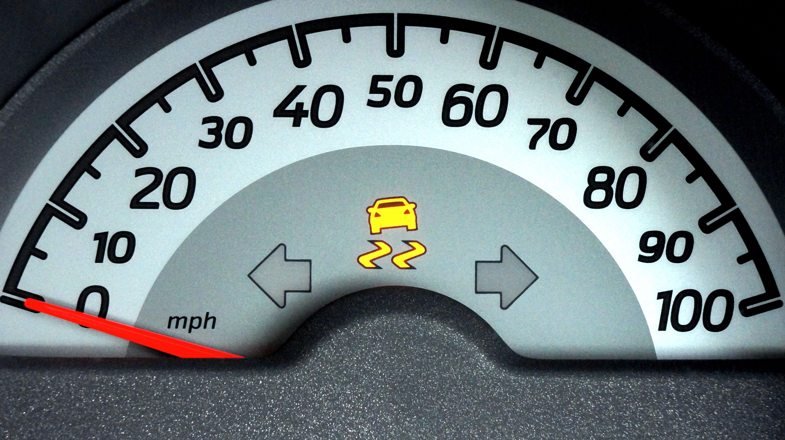

ABS Warning Light On: What It Means for Your Brakes

The ABS warning light is a dashboard indicator connected to your car's anti-lock braking system. The symbol usually contains the letters "ABS" inside a circle, sometimes surrounded by curved lines.
The anti-lock braking system helps prevent the wheels from locking during hard braking. This can help the driver maintain steering control while slowing down, especially during emergency stops on slippery surfaces.
If the ABS light stays on while you are driving, the system may have detected a fault. The warning does not automatically mean that all braking has failed, but it should not be ignored.
What Does the ABS Warning Light Mean?
ABS stands for Anti-lock Braking System. When the warning light remains illuminated after the vehicle's initial system check, it commonly indicates that the system has detected a problem.
Depending on the vehicle, the fault may involve a wheel speed sensor, wiring, a fuse, the ABS control module, the hydraulic control unit, or another component in the system.
In many vehicles, conventional braking remains available when the ABS warning light is on, but anti-lock assistance may not work. The exact behavior depends on the fault and vehicle design, so consult the owner's manual and arrange a diagnosis.
ABS Light On vs. ABS Light Flashing
ABS Light Stays On
A continuously illuminated ABS light usually means the system has detected a fault or is unavailable. Your vehicle may still brake, but you should not assume that the anti-lock function will operate during an emergency stop.
Drive cautiously only if the brakes feel normal, no other brake warning is present, and the owner's manual does not instruct you to stop. Arrange an inspection as soon as possible.
ABS Light Comes On Briefly at Startup
Many vehicles illuminate the ABS light briefly when the ignition is switched on. This is part of the normal dashboard self-check. The light should usually turn off after the system check is complete.
If the light does not turn off or comes on again while driving, consult your owner's manual and have the system checked.
Common Reasons the ABS Light Comes On
1. Faulty Wheel Speed Sensor
Wheel speed sensors monitor how quickly each wheel rotates. The ABS system uses this information to identify when a wheel may be about to lock during braking.
A damaged sensor, wiring problem, corrosion, or debris around the sensor can interfere with the signal and trigger the warning light. A diagnostic scan can help identify the affected circuit or wheel.
2. Damaged or Corroded Wiring
Wiring and electrical connectors near the wheels can be exposed to moisture, road salt, dirt, and physical damage. A poor connection may interrupt the signal between a sensor and the ABS control module.
3. Low Brake Fluid or a Brake System Problem
Some vehicles may illuminate the ABS light alongside other brake warnings when a related system problem is detected. Low brake fluid can also trigger a separate red brake warning light.
If the red brake warning light is on as well, check the owner's manual and take the situation seriously. A low fluid level may indicate a leak or another problem that needs immediate attention. Do not simply top up the fluid and assume the vehicle is safe.
4. Blown Fuse or Electrical Fault
A fuse, power supply, ground connection, or other electrical issue may prevent the ABS system from operating correctly. The correct fuse and circuit information depend on the vehicle.
Avoid replacing fuses with a higher-rated fuse or bypassing electrical components. If a replacement fuse blows again, the circuit needs further diagnosis.
5. ABS Control Module or Hydraulic Unit Problem
The ABS control module processes sensor signals and controls the anti-lock braking function. A fault in the module, hydraulic control unit, or related components can trigger a warning.
These components should be tested before replacement because similar dashboard warnings can be caused by sensors, wiring, or power supply issues.
6. Low Battery Voltage
A weak battery, charging system problem, or low system voltage can sometimes cause ABS-related warning lights. If several warning lights appear at the same time, an electrical or charging issue may be one possible cause.
Do not assume low voltage is responsible without testing. A diagnostic scan and electrical checks can help determine the actual cause.
What to Do When the ABS Light Comes On
Step 1: Check for Other Brake Warning Lights
Look at the dashboard for a red brake warning light or any additional warning messages. If the red brake warning is on at the same time, or the brake pedal feels soft, sinks unusually, or requires much more effort, stop in a safe place and do not continue driving.
Step 2: Pay Attention to Braking Behavior
If the vehicle pulls to one side, the pedal feels abnormal, braking distance increases, or you notice a fluid leak, stop safely and arrange professional assistance. Do not perform a hard-braking test on public roads to see whether ABS works.
Step 3: Consult the Owner's Manual
Warning behavior and recommended actions vary by vehicle. Check the manual for the meaning of the specific ABS indicator and whether the manufacturer recommends stopping or limiting driving.
Step 4: Arrange a Diagnostic Scan
A scan tool capable of reading ABS fault codes can help identify the system or circuit reporting a problem. A basic engine-code reader may not be able to access ABS codes.
Fault codes are useful diagnostic clues, but they do not always identify a failed part by themselves. A technician may need to inspect sensors, wiring, connectors, and other components before recommending a repair.
Step 5: Get the Fault Repaired
The repair depends on the confirmed cause. It may involve repairing wiring, replacing a sensor, correcting an electrical issue, or servicing a control component. After the repair, the system should be checked to confirm that the warning has cleared and the ABS is operating as intended.
Can You Drive with the ABS Light On?
In many vehicles, a steady ABS warning means that the anti-lock function may be unavailable, while conventional braking may still work. However, the safety of continuing to drive depends on the specific fault and the condition of the rest of the braking system.
If the red brake warning light is also on, braking feels abnormal, the brake pedal sinks, fluid is leaking, or stopping performance changes, stop safely and arrange assistance. Do not continue driving if you suspect a brake system failure.
If only the ABS light is on and the brakes feel normal, consult your owner's manual and arrange prompt inspection. Drive cautiously only if the vehicle is otherwise safe to operate, and remember that anti-lock assistance may not be available during emergency braking.
ABS Light vs. Brake Warning Light
The ABS light and the red brake warning light do not necessarily mean the same thing. The ABS light relates to the anti-lock braking system. The red brake warning light may indicate that the parking brake is engaged or that the vehicle has a brake system problem, depending on the vehicle.
If both lights illuminate while driving, the issue may be more serious than an ABS-only fault. Check the owner's manual and stop safely if the vehicle's braking system may be compromised.
Never assume that normal pedal feel guarantees that every braking safety feature is functioning properly.
How Much Does It Cost to Fix an ABS Warning?
Repair costs vary depending on the vehicle, the failed component, parts availability, and local labor rates. A wiring repair or sensor replacement may cost less than replacing an ABS control module or hydraulic unit.
Diagnosis may require an ABS-capable scan tool and electrical testing. It is best to identify the actual fault before buying parts, because replacing a sensor without confirming the problem may not resolve the warning.
Ask the repair shop for a diagnostic result and written estimate before approving the work. Since ABS is a safety-related system, avoid delaying repairs that could affect braking performance.
Frequently Asked Questions
Is it safe to drive with the ABS light on?
Conventional braking may still work on many vehicles, but the anti-lock function may be unavailable. Check your owner's manual and arrange prompt inspection. If the red brake warning light is also on or braking feels abnormal, stop safely and seek assistance.
Can a bad wheel speed sensor turn on the ABS light?
Yes. A faulty wheel speed sensor, damaged wiring, or a poor electrical connection can trigger the ABS warning. A diagnostic scan and appropriate testing can help identify the cause.
Why are both the ABS and brake warning lights on?
Both lights may indicate related or separate faults, including a problem with the braking system. If both remain on while driving, consult your owner's manual. If braking behavior is abnormal or a red brake warning appears, stop safely and arrange professional assistance.
Will disconnecting the battery reset the ABS light?
Disconnecting the battery is not a reliable repair or reset method for an ABS fault. The warning may return if the underlying problem remains, and some vehicles have specific procedures after battery disconnection. Diagnose the fault instead of relying on a reset.
Can I clear an ABS code with a basic OBD2 scanner?
Not always. Many basic OBD2 scanners read engine-related codes but cannot access the ABS module. You may need a scan tool that specifically supports ABS diagnostics for your vehicle.